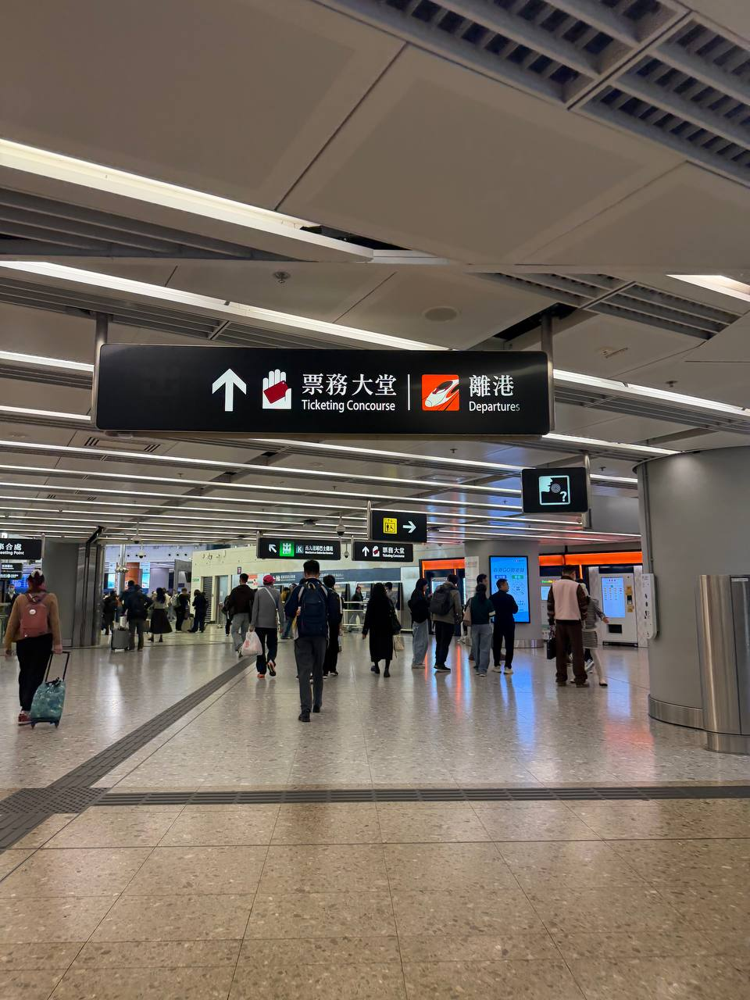
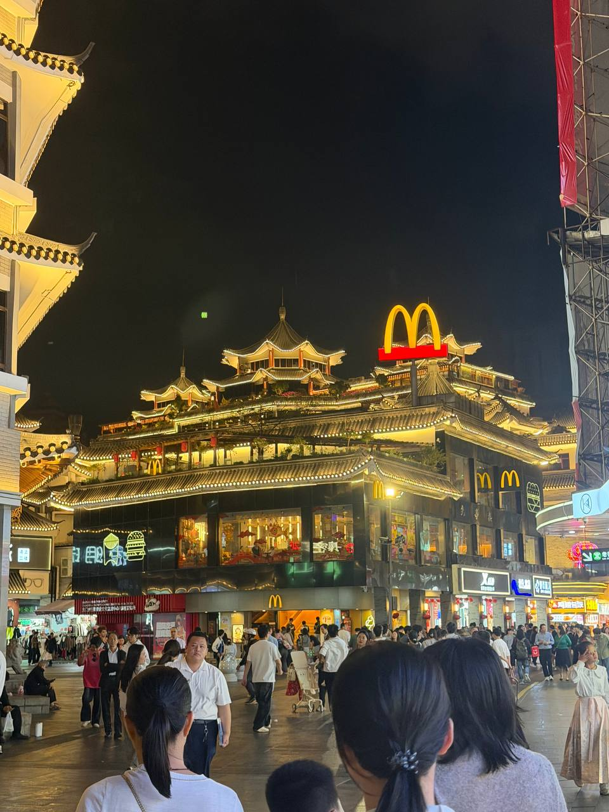
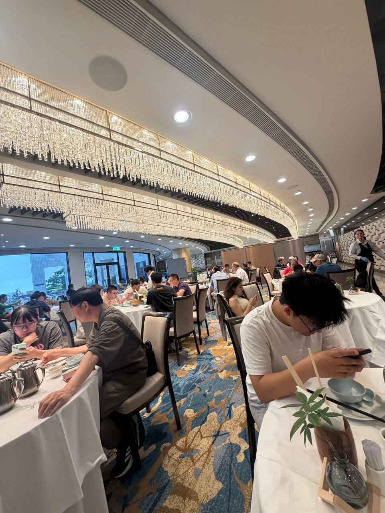
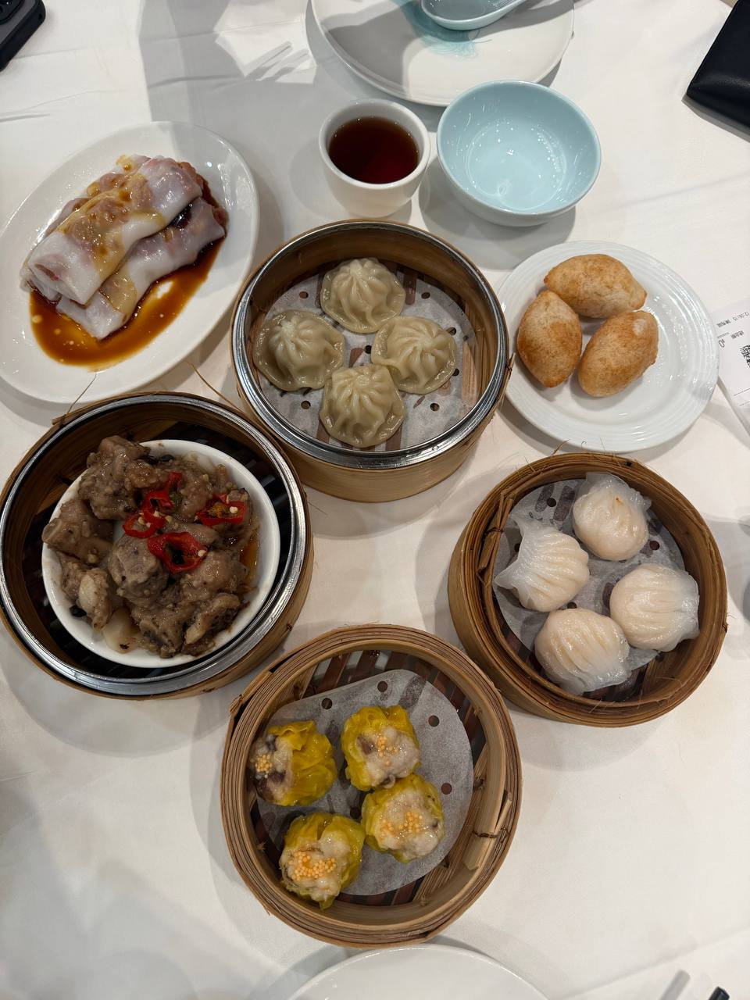
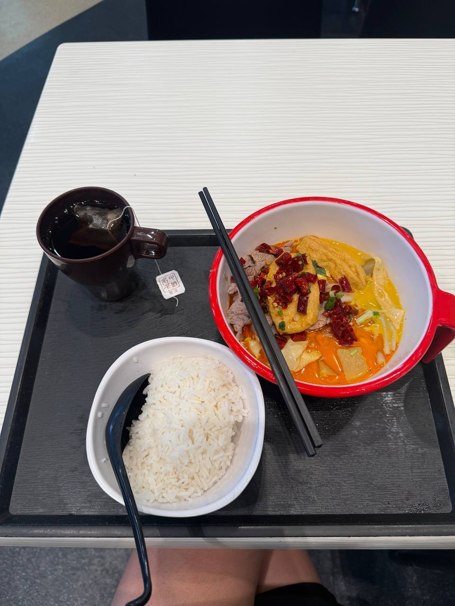
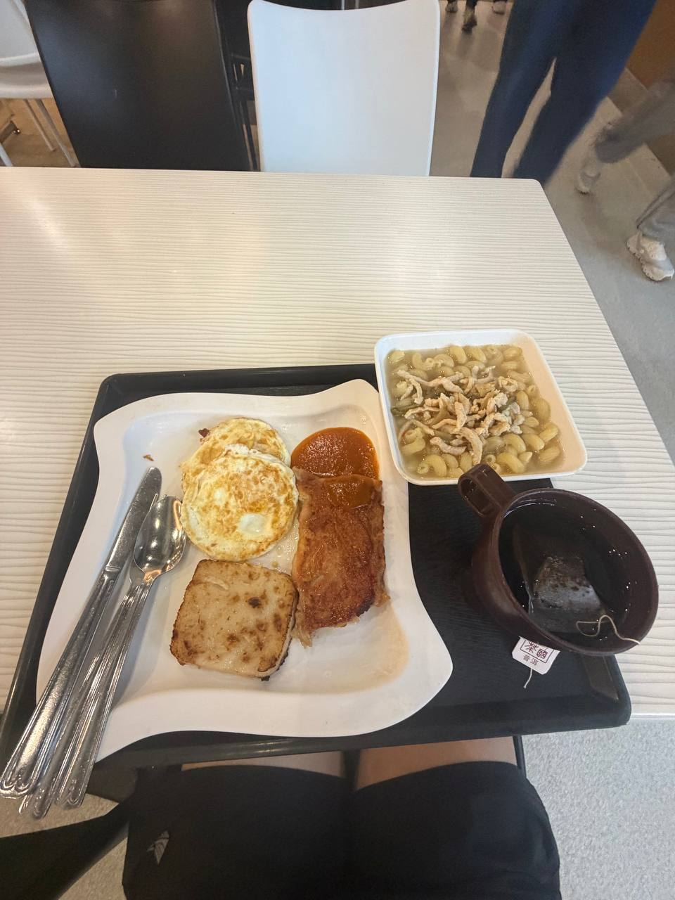
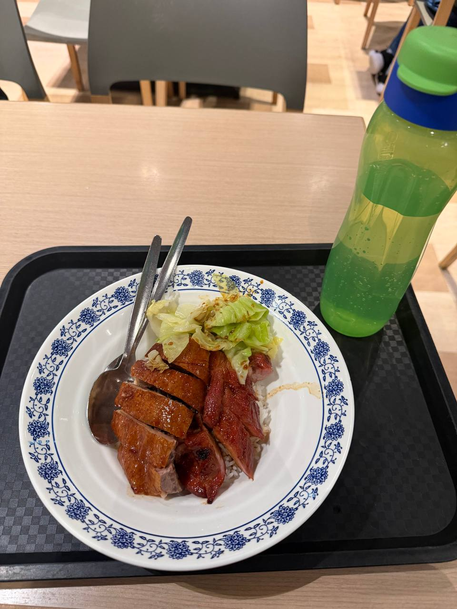
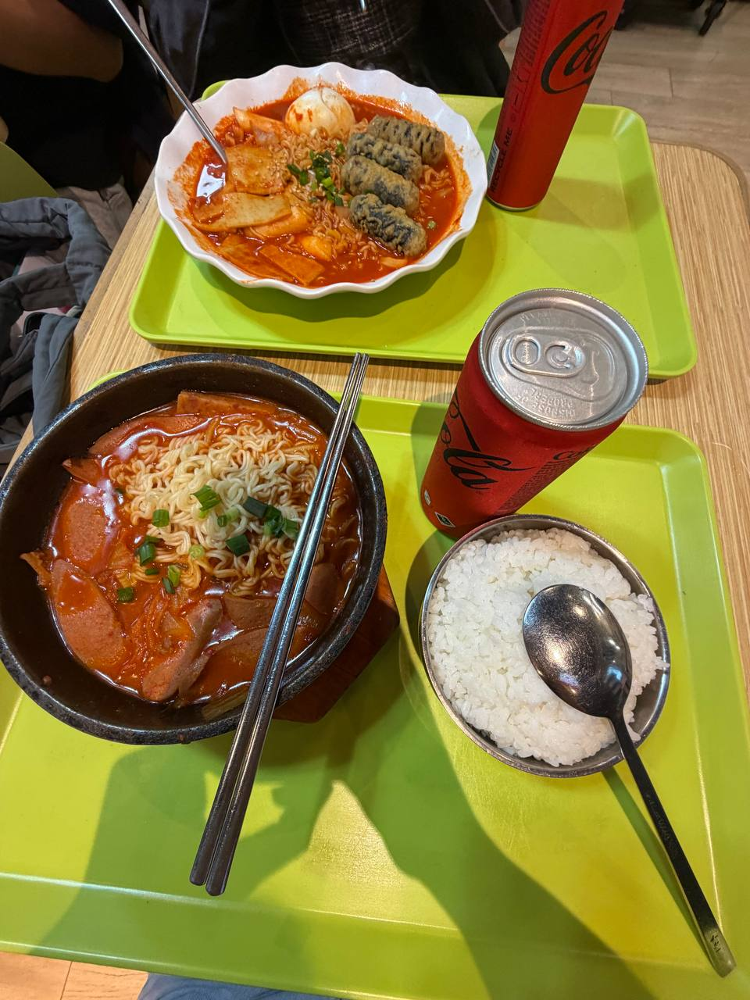

6 Things I Wished I Knew Before My Student Exchange at HKUST
One of the best experiences of my life.

My semester long student exchange programme was held from 28 January 2026 to 2 June 2026. I have absolutely no regrets. However, if I could go back in time, these are the things I would tell my past self to save her some unnecessary stress and worries.
1. Get a Physical Octopus Card
What is an Octopus card? An Octopus card is a contactless smart card primarily
used to pay for public transportation in Hong Kong. You can also use it for payment in
selected stores and restaurants. When I first landed in Hong Kong, I downloaded the Tourist Octopus Mobile Application.
It worked just fine, so I never thought to convert to using the physical Octopus card. So, imagine my shock when one of
my friends told me that the exchange rate is significantly worse on the app. At that time, I think 1 SGD = 6.11 HKD on Youtrip
(A multi-currency mobile wallet that Singaporeans use). The exchange rate on the Octopus mobile app was a shocking 1 SGD = 5.90 HKD.
I had already been using the mobile application 2 months into my semester exchange and I immediately switched to using a physical one.
Better late than never.
To get an Octopus card, simply approach any ticketing office at the MTR (Mass Transit Railway) stations and ask to purchase one. You'd have to pay
200 HKD. 50 HKD will be used as a deposit and 150 HKD will be used as stored value in your card.
2. Choose your student accomodation wisely
For exchange students, you'd get a choice of staying at either the Undergraduate Halls which are on campus, or the
Jockey Club Hall in Tseung Kwan O. They each have their own pros and cons.
Of course, the Undergraduate Halls would be a better choice for you if you intend to be in school often for your classes or school activities. However, it is less accessible. The nearest MTR station to school is Hang Hau, and you take a 20 minute bus ride on Bus 11M from the Bus Terminus to the University's North Bus Stop. If you plan to have many late night outs, then maybe staying on campus might not be the best choice for you. The last bus 11M is at 12 midnight and subsequently, you'd have to wait for Bus 11 to get to school, which comes in 45 minute to 1 hour intervals. What about walking? According to Google Maps, it takes 59 minutes. I personally wouldn't walk to school at 1am in the morning, but you could try.
On the other hand, Jockey Club Hall is a 5 minutes walk away from the Tsueng Kwan O MTR Station. There is a free shuttle bus service from Jockey Hall to HKUST at these selected timings. It is a 15 min to 20 min journey.
3. There are two bus stops on campus
There is the North Bus Stop and the South Bus Stop. If I'd want to get to Hang Hau, I would walk to the North Bus Stop and take bus 11M. Going to Hang Hau first is also a smarter choice if my final destination is any where on Hong Kong Island (Blue Line). If I'd want to get to Sham Shui Po, Prince Edward or Mongkok instead, I would go to the South Bus Stop, where I can take the bus 91M which goes directly to Choi Hong MTR and Diamond Hill MTR.

4. How do I get to Shen Zhen?
Oh Shen Zhen, my dear Shen Zhen. I went to Shen Zhen a grand total of seven times during the school term. What's not to love?
Everything is more affordable and the food, the food was simply mouth-watering.


There are 2 ways you could get to Shen Zhen. You could go to Hong Kong West Kowloon MTR Station and take the HSR (High Speed Rail) to Shen Zhen. You can either purchase your train tickets on 12306 China Railway or on Trip.com.
Or you could take the MTR all the way to Lo Wu station instead. Either way, do remember to fill in your China arrival card before passing through immigration.
5. Take the Airport Bus
The cheapest way to the airport is by bus. If you are going to the Airport via MTR, be prepared to spend additional on the Hong Kong Airport Express Line. Fortunately for us, you could get off a stop earlier while taking bus 11M to Hang Hau and take bus A29 for a direct journey to the airport. If you stay at Jockey Hall, you could take bus E22A instead. Don't worry, all airport buses have a designated area to place your luggage. Plug in your earpiece and enjoy the ride.
6. What to eat in HKUST?
Bad news, the food on campus is not known to be the best. In my opinion, here are some decent food options in school.
1. China Garden


2. LG7 Mala Mi Xian

3. LG7 Breakfast Set

4. Canteen 2 BBQ Delights

5. Hungry Korean

Or you could cook. There is a supermarket located beside the LG7 Canteen called Fusion and you can buy groceries from there. However, it is a bit pricey. If you want to save more money, I would suggest getting your groceries from the supermarket at Hang Hau East Point City or Tseung Kwan O Shopping Malls instead.